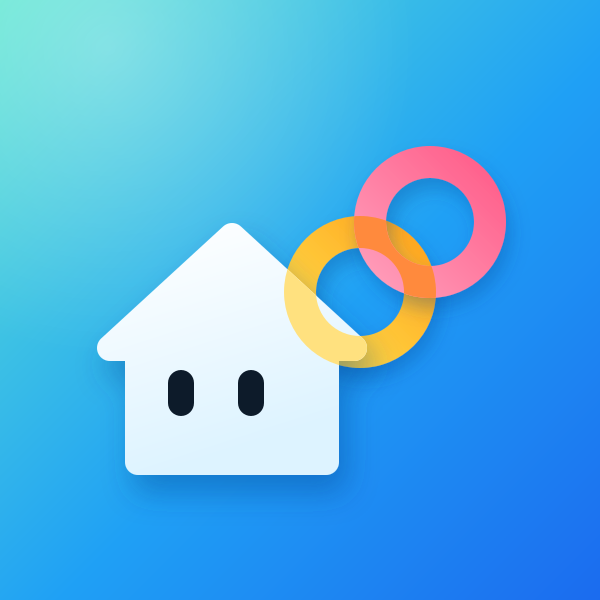

민트에서 파랑으로 이어지는 배경 위에, 집과 서로 겹친 두 고리(노랑, 코랄)가 있습니다. 고리가 집 지붕에 걸친 자리에는 크림색이, 고리끼리 겹친 자리에는 주황이 섞여 보입니다.

icons/logo-600.png 콘솔 '앱 로고'에 올리는 파일 (600×600, 투명 없음, 모서리 둥글지 않음)icons/logo.svg 원본 (그라데이션, 그림자, 겹침 색 포함)icons/candidates/ 검토한 다른 시안들